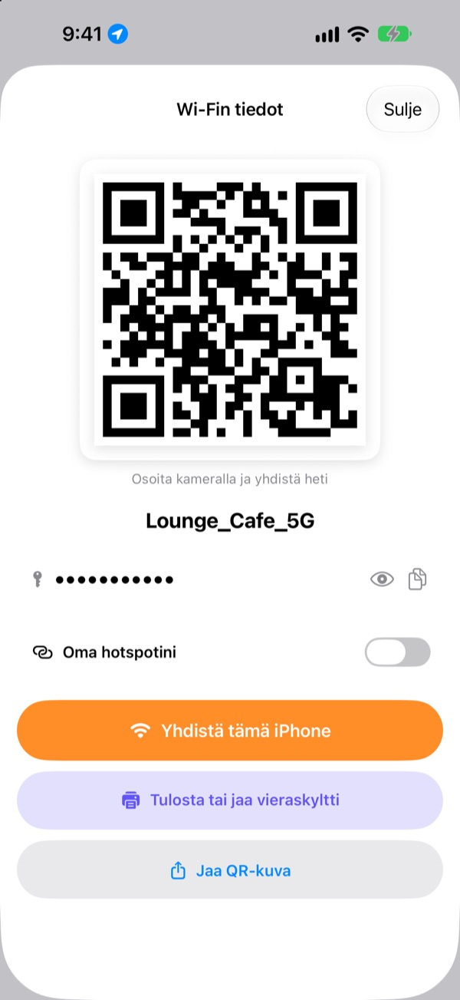
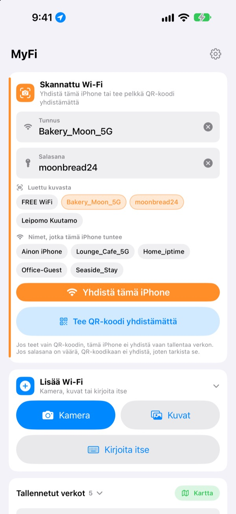
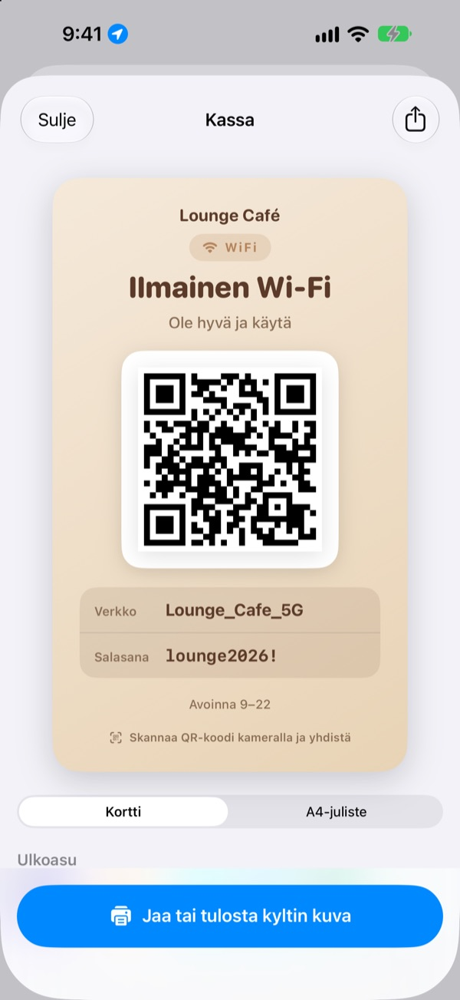
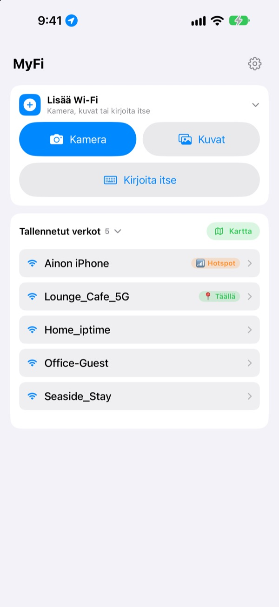

Lopeta salasanan sanelu.
Näytä QR-koodi.
Ystävät osoittavat vain kameralla, ja yhteys on päällä. Kahvilan seinän kyltti? Yksi kuva, ja tämä iPhone yhdistää. Ei enää näppäilyvirheitä kopioidessa.
Kaikki ominaisuudet ovat ilmaisia. iPhone, jossa iOS 17 tai uudempi.

Tee Wi-Fi-verkollesi QR-koodi
Muuta nimeä tai salasanaa, niin kyltti päivittyy heti. Osoita sitä puhelimen kameralla, niin saat oikean kehotteen liittyä verkkoon.
”Mikä se Wi-Fin salasana olikaan?” Monesko kerta tänään?
Sanot sen ääneen ja isot kirjaimet menevät väärin. Kopioit seinän kyltistä ja sekoitat 0:n ja O:n. Sitten selität kaiken uudelleen. MyFi tekee siitä yhden kuvan ja yhden QR-koodin.
Kuvaa, ja olet verkossa
Kuvaa Wi-Fi-kyltti tai kuitti tai valitse kuva kirjastosta. MyFi lukee verkon nimen ja salasanan ja yhdistää tämän iPhonen. Jos kyltissä on myös QR-koodi, se luetaan ensin, jotta tiedot ovat täsmälleen oikein.
Jos teksti on epäselvä, vedä kuvasta poimittu pala nimen tai salasanan kenttään.

Tee ja tulosta vieraskyltti
Valitse yksi 7 teemasta ja lisää nimi, logo ja rivejä kuten aukioloajat. Valitse kortti tai pysty A4-juliste, tallenna kuvaksi tai tulosta heti AirPrintillä.
Pidä useita kylttejä, yksi jokaiselle paikalle tai pöydälle, ja muokkaa niitä milloin vain.

Paikat, joihin palaat, ovat ylimpänä
Verkot, joihin yhdistät tai joita jaat, tallentuvat sijainnin kanssa. Kun palaat, se verkko on listan kärjessä, ja kaikki tallennetut paikat näkyvät kartalla.
Laita useimmin jakamasi Wi-Fin QR-koodi widgetiksi Koti-valikkoon tai lukitulle näytölle. Kun vieras kysyy, näytä vain näyttöä.

Alkuun kolmessa vaiheessa
- 1
Avaa appi
Se kysyy kerran sijaintilupaa, koska iOS kertoo nykyisen Wi-Fin nimen vain apeille, joilla lupa on.
- 2
Kuvaa tai kirjoita
Kuvaa kyltti tai kirjoita oman Wi-Fisi salasana kerran.
- 3
Yhdistä tai näytä
Yhdistä tämä iPhone tai näytä QR-koodi toisen kameralle.
Mistä löydät mitäkin
- Yhdistäminen kyltin kuvasta
Lisää Wi-Fi, sittenKamerataiKuvat, sittenYhdistä tämä iPhone- Tietojen kirjoittaminen
Lisää Wi-Fi, sittenKirjoita itse- Pelkkä QR-koodi
Tee QR-koodi yhdistämättä- QR-koodin lähettäminen viestissä
- Napauta tallennettua verkkoa, sitten
Jaa QR-kuva - Vieraskyltti
- Napauta tallennettua verkkoa, sitten
Tulosta tai jaa vieraskyltti - Oma hotspot QR-koodina
- Napauta tallennettua verkkoa ja laita
Oma hotspotinipäälle - Yhdistä tai jaa yhdellä pyyhkäisyllä
- Pyyhkäise listassa oikealle yhdistääksesi, vasemmalle jakaaksesi
- Tallennetut paikat
Kartta, kohdanTallennetut verkotvieressä- QR-koodi Koti-valikkoon
- Pidä sormea Koti-valikossa ja lisää MyFin
Wi-Fi-QR-widget
QR-koodin voi avata suoraan myös Sirillä tai Pikakomennot-apilla.
Kaikki ominaisuudet ovat ilmaisia
Ilmainen
- Wi-Fi-yhteys kuvasta
- QR-koodien teko ja jako kuvana
- Vieraskyltit 7 teemalla, korttina tai A4-julisteena, tulostus AirPrintillä
- Widgetit Koti-valikkoon ja lukitulle näytölle
- Kartta tallennetuista Wi-Fi-verkoista
- Ei mainoksia, ei rekisteröitymistä
Tippi (vapaaehtoinen)
- Jos pidät apista, voit tukea kehitystä tipillä
- Tippi ei avaa mitään. Ilman sitäkin saat kaikki ominaisuudet
Tippi on pieni kertamaksu.
Ei tilauksia eikä maksullisia ominaisuuksia.
Usein kysyttyä
Miksi salasana pitää kirjoittaa itse?
iOS ei anna minkään apin lukea laitteeseen tallennettuja Wi-Fi-salasanoja. Siksi MyFi tunnistaa verkon nimen, ja salasanan kirjoitat kerran. Sen jälkeen appi käyttää tallennettua.
En näe nykyisen Wi-Fin nimeä.
iOS antaa Wi-Fin nimen vain apeille, joilla on sijaintilupa. Salli MyFi kohdassa Asetukset › Tietosuoja ja suojaus › Sijaintipalvelut. Sijaintia käytetään vain verkon nimen lukemiseen ja paikkojen tunnistamiseen, joihin palaat.
Nimi tai salasana luettiin väärin.
Mene lähemmäs ja kuvaa suoraan. Jos se on yhä väärin, vedä oikea pala kuvasta kenttään tai korjaa käsin. Jos kyltissä on Wi-Fi-QR-koodi, MyFi lukee sen ja täyttää tarkat tiedot.
Millaisia kylttejä se osaa lukea?
Parhaiten se lukee englannin- tai koreankielisiä kylttejä, joissa on merkintöjä kuten ID, PW, SSID, Network tai Password. Ilman merkintöjäkin se löytää rivin, joka näyttää salasanalta. Kyltin Wi-Fi-QR-koodi luetaan tarkasti kielestä riippumatta.
Miten joku yhdistää QR-koodillani?
iPhonella ja Androidilla riittää osoittaa sisäänrakennetulla kameralla koodia ja napauttaa kehotetta. Mitään appia ei tarvita.
Näkevätkö muut salasanani?
QR-koodissa on tavalliset Wi-Fi-kirjautumistiedot. Sinä päätät aina, jaatko sen, ja vieraskyltistä voit piilottaa salasanan.
Miksi en voi yhdistää omaan hotspotiini?
iPhonen Oma yhteyspiste on tämä puhelin itse, eikä se voi yhdistää itseensä. Laita Oma hotspotini päälle, niin MyFi käsittelee sitä muille jaettavana QR-koodina.
Minne Wi-Fi-tietoni menevät?
MyFillä ei ole palvelinta. Verkkojen nimet, salasanat, kuvista luetut tiedot ja sijainnit käsitellään ja tallennetaan vain laitteessasi. Ei mainoksia eikä seurantaa. Appi lähettää Apple iCloudiin vain nimettömiä käyttötilastoja ja virheraportteja korjaamista varten.
Millä laitteilla se toimii?
iPhonella, jossa on iOS 17 tai uudempi. Appi on saatavilla 24 kielellä.
Kysyttävää tai palautetta? Kirjoita osoitteeseen leeo@kakao.com. Vastaan yleensä 2–3 päivässä.